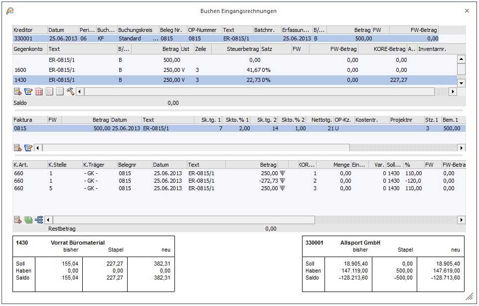
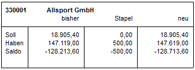
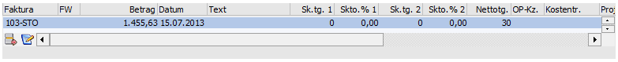
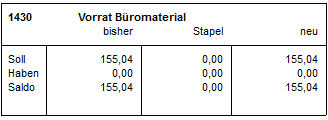
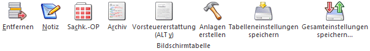
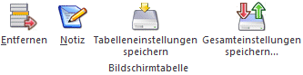

Im Menüpunkt
1 Buchen
1 Buchen
1 Eingangsrechnungen
oder Schnellaufruf
1 STRG + 2
können auf einfache Art und Weise Eingangsrechnungen erfasst werden.

Der Eingabebildschirm wird grundsätzlich in 4 Bereiche geteilt:
ü Hauptbuchungsteil
ü Gegenkontenbuchungsteil
ü OP-Teil
ü Informationsteil bzw. Kostenrechnungsinfoteil
Im ersten Teil wird die "Hauptbuchung" eingegeben. Dazu sind folgende Felder vorgesehen:
Ø Kreditor
Eingabe der Kreditorennummer, die bebucht werden soll. Durch Drücken der F9-Taste kann nach allen angelegten Lieferanten gesucht werden. Nach Bestätigung der Kontonummer werden im vierten Buchungsteil (Informationsteil) die Daten des Kreditors angezeigt. Neben der Kontonummer und der Bezeichnung werden die Werte "Soll", "Haben" und "Saldo" angezeigt. Handelt es sich bei dem Konto um ein Fremdwährungskonto (im Kontenstamm muss eine fixe Fremdwährung hinterlegt sein), dann werden in einer eigenen Zeile auch noch die Fremdwährungswerte angezeigt.

Ø Datum
Eingabe des Buchungsdatums.
Ø Periode
Eingabe der Periode, in die die Buchung für die Steuer gerechnet werden soll.
Ø Buchungsart
Es stehen sowohl die Standard- als auch firmenindividuelle Buchungsarten vom Typ "KF" zur Verfügung.
Auch ein eventuell hinterlegter Nummernkreis aus der Buchungsart wird in diesem Fenster unterstützt (Mikrostapel-Einstellungen aus der Buchungsart allerdings nicht).
Ø Buchungskreis
Diese Spalte wird im Buchungsprogramm angezeigt, um einen Buchungskreis der Buchung zuzuordnen, wenn in dem Programm
1 Stammdaten
1 Buchungskreise
Buchungskreise definiert wurden.
In der Auswahllistbox werden nur jene Buchungskreise angezeigt, für die der Benutzer die Berechtigung hat.
Vorgeschlagen wird der Buchungskreis Standard oder der in der Buchungsart hinterlegte Buchungskreis.
Diverse Auswertungen können nach Buchungskreisen selektiert werden.
Ø Beleg Nr.
Eingabe der Belegnummer, es dürfen keine Sonderzeichen wie ' oder % verwendet werden. Die Belegnummer wird auf alle Folgebuchungen (innerhalb dieser einen Buchung) übertragen.
Ø Text
Buchungstext
Ø Batchnr.
In diesem Feld kann eine sogenannte Batchnummer hinterlegt werden, die auch in allen anderen Buchungsprogrammen zur Verfügung steht. Dadurch können Buchungen zu einem "Belegkreis" zusammengefasst werden. Wurde einmal eine Batchnummer eingetragen und damit Buchungen durchgeführt, wird diese Batchnummer benutzerspezifisch und buchungsprogrammunabhängig gespeichert. Ruft also der gleiche Benutzer wieder ein Buchungsprogramm auf, wird die zuletzt hinterlegte Batchnummer vorgeschlagen. Die Batchnummer kann durch Drücken der + - Taste jeweils um 1 hochgezählt werden. In den FIBU-Parametern (WinLine START, Menüpunkt Optionen/FIBU-Parameter) kann gesteuert werden, dass diese Batchnummer automatisch hochgezählt wird.
Ø Erfassungsdatum
Hier wird das Einstiegsdatum vorgeschlagen. Damit könnten Sie nachvollziehen WANN eine Journalzeile tatsächlich erfasst worden ist. Für die Nachvollziehbarkeit der Erfassungsreihenfolge ist natürlich die vom System automatisch und unbeeinflussbar vergebene Prima Nota Nummer relevant. In WinLine START / Parameter / Applikationsparameter / FIBU-Parameter / Buchen kann für das Erfassungsdatum eingestellt werden, ob das Erfassungsdatum pro Stapel editierbar, pro Buchung editierbar oder nicht editierbar sein soll.
Ø B/N/F
Hier kann entschieden werden, wie der Buchungsbetrag eingegeben werden soll. Dabei gibt es folgende Möglichkeiten:
B Der Betrag wird Brutto (inkl. Steuer eingegeben)
N Der Betrag wird Netto (exkl. Steuer eingegeben)
FB Es wird ein eigenes Fenster geöffnet, in das der Buchungsbetrag in Fremdwährung "Brutto" eingegeben werden kann. Dabei kann neben der Fremdwährung auch der Kurs und die Einheit geändert werden. Die Notierung (lt. FW-Stamm) bleibt jedoch gleich und wird natürlich bei der Umrechnung berücksichtigt.
FN Es wird ein eigenes Fenster geöffnet, in das der Buchungsbetrag in Fremdwährung "Netto" eingegeben werden kann. Dabei kann neben der Fremdwährung auch der Kurs und die Einheit geändert werden. Die Notierung (lt. FW-Stamm) bleibt jedoch gleich und wird natürlich bei der Umrechnung berücksichtigt.
Wurde ein Konto angesprochen, bei dem eine Fremdwährung hinterlegt ist, wird FB für Fremdwährung Brutto automatisch vorgeschlagen (kann natürlich noch geändert werden) und man gelangt automatisch in die Fremdwährungserfassung.
Ø Betrag
Buchungsbetrag
Durch Drücken der F9-Taste oder Anklicken des  -Buttons wird das Umrechnungsfenster
geöffnet, in dem der Betrag auf Basis der im Mandantenstamm hinterlegten
Landeswährungen (z. B. DEM und EURO) sowohl in Landeswährung 1 als auch in
Landeswährung 2 eingegeben werden kann. Zum Buchen wird dann der Betrag in
Landeswährung 1 verwendet.
-Buttons wird das Umrechnungsfenster
geöffnet, in dem der Betrag auf Basis der im Mandantenstamm hinterlegten
Landeswährungen (z. B. DEM und EURO) sowohl in Landeswährung 1 als auch in
Landeswährung 2 eingegeben werden kann. Zum Buchen wird dann der Betrag in
Landeswährung 1 verwendet.
Nach Bestätigung des Betrages gelangt man durch Drücken der Pfeil-nach-Unten-Taste in den zweiten Erfassungsteil. Gleichzeitig wird im dritten Erfassungsteil (OP-Informationen) die dazugehörige Faktura angezeigt. Diese kann nachträglich noch verändert werden. Dabei können folgende Felder bearbeitet werden.

Ø Faktura
Fakturen-Nummer. Max. 20stellige Eingabe, es dürfen keine Sonderzeichen wie ' oder % verwendet werden. Die Belegnummer der Sachbuchhaltungszeile wird als Fakturennummer vorgeschlagen. Die erste Stelle muss numerisch und ungleich Null sein, danach können Buchstaben verwendet werden. Sollte die Fakturennummer für den angesprochenen Kunden / Lieferanten schon vergeben sein, wird sie mit dem Hinweis ungültige Fakturennummer abgewiesen.
Ø FW
Wurde die Buchung in Fremdwährung erfasst, wird hier der verwendete Fremdwährungscode angezeigt. Dieser kann nicht verändert werden.
Ø Betrag
Der Bruttobetrag der Sachbuchungszeile wird in das Feld Betrag übernommen und vorgeschlagen. Im Normalfall wird der Betrag durch Drücken der RETURN-Taste bestätigt. Der Betrag kann manuell korrigiert und auf mehrere Fakturen aufgeteilt werden.
Durch Drücken der F9-Taste oder Anklicken des -Buttons wird das Umrechnungsfenster
geöffnet, in dem der Betrag auf Basis der im Mandantenstamm hinterlegten
Landeswährungen (z. B. DEM und EURO) sowohl in Landeswährung 1 als auch in
Landeswährung 2 eingegeben werden kann. Zum Buchen wird dann der Betrag in
Landeswährung 1 verwendet.
Ø Datum
Valuta-Datum: Das Datum der Sachbuchungszeile wird vorgeschlagen und kann manuell korrigiert werden. Das Fakturendatum wird für die Berechnung der Konditionen (Skontotage, Nettotage) herangezogen. Weicht das Fakturendatum von dem Buchungsdatum ab, wird das vorgeschlagene Datum in der Offenen Posten-Zeile überschrieben.
Ø Text
Eingabe eines OP-Textes. Standardmäßig wird der Buchungstext übernommen. Der Text kann editiert werden. Durch Drücken der F9-Taste wird das Fenster "Fakturen-Notiz" geöffnet, in dem ein beliebig langer Text zu dieser Faktura eingegeben werden kann. Standardmäßig wird die Buchungsnotiz aus der Sachbuchungszeile übernommen.
Ø Zahlungskonditionen
Die Konditionen werden vom Debitoren- bzw. Kreditorenstamm übernommen und vorgeschlagen:
Sk.frist 1: Skontotage 1
Skonto 1 %
Sk.frist 2: Skontotage 2
Skonto 2 %
Nettotage
Hinweis
Ist in den FIBU-Parametern die Einstellung "Eingabe von Fälligkeits- und Skontodatum anstelle der Netto- und Skontotage" aktiviert, so stehen die Felder
ü Fälligkeitsdatum anstelle der Nettotage
ü Skontodatum1 anstelle der Skontotage1
ü Skontodatum2 anstelle der Skontotage2
zur Verfügung.
Ø OP-Kennzeichen
Das Zahlungskennzeichen wird aus dem Personenkontenstamm vorgeschlagen (Zahlungskennz. in FIBU-Fenster) und kann in der Faktura übersteuert werden. Im Zahlungsverkehr kann der Zahlungsvorschlag nach diesem Kennzeichen selektiert werden (z.B. Fakturen, die mit Scheck gezahlt werden sollen, von einer bestimmten Hausbank überwiesen werden sollen, etc.).
Ø Kostentr.
Das Feld Kostenträger wird nur von der WinLine FAKT verwendet: Wenn ein Auftrag mit Anzahlung gedruckt wird, wird der Kostenträger als Kennzeichen für die nachfolgende Faktura verwendet - dadurch kann festgestellt werden, welche Anzahlungen es zu welcher Faktura bereits gegeben hat. Der von der WinLine FAKT übergebene Kostenträger kann aber bei Bedarf überschrieben werden (ist nicht zu empfehlen).
Ø Projektnummer
Hier kann die Projektnummer eingegeben werden, also jede Projektnummer eines Kunden- oder Serviceprojektes. Nicht angelegte Projektnummern und Kampagnen sind nicht zulässig.
Ø Umsatzsteuerkennzeichen/Umsatzsteuerprozentsatz
In jede Faktura wird auch der Steuersatz des Gegenkontos der Sachbuchungszeile sowie bis zu 3 Bemessungsgrundlagen und die dazugehörigen Steuerzeilen im Unternehmensstamm gespeichert. Diese Information wird zur Bildung des Skontobuchungssatzes bei der Zahlung der Faktura herangezogen.
Die Bemessungen können hier nicht editiert werden und die Bemessungen nur dann, wenn eine Steuerzeile vorhanden ist (ist nur eine Steuerzeile in der OP gespeichert, können Bemessung 2 und 3 nicht editiert werden.)
Die Summe der Bemessungen darf nicht größer sein als der Fakturenbetrag, kann allerdings kleiner sein. Dies kann vorkommen, wenn z.B. in der FAKT eine Skontosperre gesetzt ist.
Durch Drücken der F3-Taste im Bemessungs-Feld wird der Betrag vorgeschlagen, der zur vollständigen Aufteilung des Fakturenbetrags nötig ist.
Beispiel
Die Faktura wurde auf ein Konto mit der Unternehmensstammzeile 2, welche mit 16 % (20 %) USt angelegt wurde, gebucht, dann wird die Skontoaufwandsbuchung bei Zahlung der Faktura automatisch auf das Skontoaufwandskonto mit dem USt-Schlüssel U16 (U 20) gebucht.
Im Gegenkontenbuchungsteil muss (müssen) nur mehr das (die) Gegenkonto(en) und der jeweilige Betrag eingegeben werden.
Nach Eingabe der jeweiligen Kontonummer wird im Informationsteil die Kontenbezeichnung und die Werte "Soll", "Haben" und "Saldo" angezeigt. Handelt es sich bei dem Konto um ein Fremdwährungskonto (im Kontenstamm muss eine fixe Fremdwährung hinterlegt sein), dann werden in einer eigenen Zeile auch noch die Fremdwährungswerte angezeigt.

Wird im Gegenkontenbuchungsteil ein Konto mit Kostenart angesprochen, wird der Konten-Informationsteil mit der Kostenrechnung-Info überlagert. Sobald die Sachbuchungszeile verlassen wird, gelangt man in die Tabelle, in der die KORE-Aufteilung durchgeführt werden muss.
In der Kostenerfassungstabelle wird für jede Gegenbuchungszeile, wo ein Konto mit einer hinterlegten Kostenart angesprochen wird, automatisch eine Kostenerfassungszeile erstellt. Dabei werden aber nur die Informationen wie Kostenart, Belegnummer, Buchungstext, Buchungsdatum und der Betrag übernommen. Die restlichen Eingaben wie Kostenstelle, Kostenträger evtl. Variator müssen manuell eingegeben werden.
Außerdem wird geprüft, ob der Benutzer die Berechtigung hat (WinLine KORE/Stammdaten/Kostenträger, -stellen, -arten), die eingegebene Kostenart und Kostenstelle bzw. den Kostenträger zu verwenden.
Folgende Felder stehen zur Verfügung:
Ø Kostenart
Eingabe der Kostenart, max. 20stellig, alphanumerisch. Die Kostenart, die bei dem angesprochenen Sachkonto hinterlegt wurde, wird vorgeschlagen und kann ggf. editiert werden. Wird eine Einzelkostenart angewählt, kann auch ein Kostenträger angesprochen werden. Bei Eingabe einer Gemeinkostenart bleibt das Aufteilungsfeld K.Träger/Proj für die Aufteilung gesperrt.
Ø K.Stelle
Eingabe der Kostenstellennummer, der der Betrag zugeordnet werden soll.
Ø K.Träger
Eingabe der Kostenträgernummer (Achtung: nur bei Einzelkosten möglich).
Hinweis
Nach Eingabe des Kostenträgers wird geprüft, ob das Buchungsdatum auch innerhalb der Laufzeit des Kostenträgers liegt. Ist das nicht der Fall, wird eine entsprechende Meldung ausgegeben, die Buchung kann aber trotzdem weiter erfasst werden.

Ø Belegnummer
Belegnummer, max. 20stellig, alphanumerisch. Die Belegnummer wird aus der zuvor erfassten Buchungszeile vorgeschlagen und kann ggf. editiert werden.
Ø Datum
Eingabe des Buchungsdatums, wird aus der Buchungszeile übernommen.
Ø Text
Buchungstext, max. 25stellig, alphanumerisch, wird ebenfalls aus der Buchungszeile übernommen.
Ø Betrag
Wenn im Feld % ein Prozentsatz eingegeben wurde, füllt das Programm das Betragsfeld automatisch mit dem errechneten Wert aus. Dieser Betrag kann auch manuell eingegeben werden. Durch Drücken der F3-Taste wird der noch nicht aufgeteilte Betrag automatisch übernommen.
Durch Anklicken des  - Buttons wird, sofern der KORE-Betrag
nicht zur Gänze aufgeteilt wurde, eine neue KORE-Zeile erstellt, die die
gleichen Werte enthält, wie die Zeile, von der aus der Button betätigt
wurde.
- Buttons wird, sofern der KORE-Betrag
nicht zur Gänze aufgeteilt wurde, eine neue KORE-Zeile erstellt, die die
gleichen Werte enthält, wie die Zeile, von der aus der Button betätigt
wurde.
Ø Menge
Eingabe der Anzahl der in der Kostenart hinterlegten Mengeneinheit.
Ø Einheit
Anzeige der im Kostenartenstamm hinterlegten Einheit (Stunden, Kilometer, etc.).
Ø Var.
Der Variator, der in der Kostenart für diese Kostenstellengruppe hinterlegt worden ist, wird automatisch aufgrund der aktuellen Kostenart vorgeschlagen, kann aber manuell übersteuert werden.
In der Tabelle können dann beliebig viele Kostenerfassungszeilen eingegeben werden, wobei der Buchungsbetrag zur Gänze aufgeteilt werden muss.
Ø Sollkonto
Hier wird das Sollkonto aus der korrespondierenden Sachbuchungszeile angezeigt.
Ø %
Geben Sie ein, welcher Prozent-Anteil des im Feld Betrag eingetragenen Gesamtbetrages dieser Kostenstelle (diesem Kostenträger) zugeordnet werden soll. Das Feld kann auch einfach (mit ENTER) übergangen werden, wenn Sie den Teilbetrag direkt im darauffolgenden Feld eintragen möchten.
Solange der Gesamtbetrag nicht zur Gänze aufgeteilt ist, kann die Aufteilung nicht verlassen werden (Meldung: Der Buchungsbetrag wurde nicht zur Gänze aufgeteilt). Im Feld Restbetrag wird der noch aufzuteilende Wert angezeigt.
Informationsfelder
Ø FW
Wurde die Buchung in einer Fremdwährung erfasst, wird hier der verwendete Fremdwährungscode angezeigt. Dieser kann nicht verändert werden.
Ø FW-Betrag
Der Netto-Fremdwährungsbetrag wird angezeigt.
Ø Kostenart
Auf welche Kostenart erfolgt die Aufteilung, die gerade bearbeitet wird.
Ø Kostenstelle
Auf welche Kostenstelle erfolgt die Aufteilung, die gerade bearbeitet wird.
Ø Kostenträger
Auf welchen Kostenträger erfolgt die Aufteilung, die gerade bearbeitet wird.
Zu den vom Programm vorgeschlagenen Kostenerfassungszeilen können noch beliebige Zeilen hinzugefügt werden. Voraussetzung dafür ist allerdings, dass sich der Buchungsbetrag (für die Kostenrechnung) auf 0 ausgeht.
Buttons
Ø Buchen
Durch Anklicken dieses Buttons oder F5 werden alle eingegebenen Informationen gespeichert und verbucht.
Ø Ende
Dadurch wird das Fenster geschlossen, alle eingegebenen und nicht verbuchten Informationen gehen verloren.
Ø Abbruch
Dadurch werden alle erfassten Informationen gelöscht, es kann ein neuer Buchungsvorgang erfasst werden.
Ø Kontoblatt
Dadurch wird ein Kontoblatt aller in den Buchungen vorhandener Konten angezeigt. Dabei werden die erfassten Buchungen und der daraus resultierende Saldo ausgewertet.
Ø Saldenliste
Durch Betätigen des Saldenliste-Buttons wird eine neue Liste geöffnet, in der für die im Stapel verwendeten Konten der alte Saldo, die Summen der Buchungen und der entsprechende neue Saldo angezeigt werden.
Ø Journal
Hier werden die erfassten Buchungen mit allen möglichen Ausprägungen (Faktura, Kostenrechnungsinfo) angezeigt.
Ø Journal (mit Protokolldruck)
Bei Drücken dieses Buttons erfolgt automatisch eine Prüfung aller im Stapel erfasster Buchungen auf ihre Richtigkeit. Sollten Fehler vorhanden sein, werden diese gleich in einem Prüfprotokoll (Buchungsprotokoll) ausgegeben. Dabei wird der gerade eingestellte Drucker verwendet.
Ø Konteninfo
Es werden die hinterlegten Konteninformationen zu den bebuchten Konten angezeigt.
Tabellenbuttons "Buchen"

Ø Entfernen
Damit kann die Gegenbuchung gelöscht werden, die gerade aktiv ist (in der Buchungszeile muss der Focus gesetzt sein).
Ø Notiz
Durch Anklicken des Notiz-Buttons kann ein beliebig langer Buchungstext erfasst werden. Dieser kann auch bei den diversen Auswertungen angedruckt werden.
Ø Sachkonten-OP
Durch Anwahl des Buttons "Sachk.-OP" kann eine OP-Verwaltung für Sachkonten durchgeführt werden. Voraussetzung dafür ist, dass das Sachkonto entsprechend angelegt wurde.
Ø Archiv
Befindet man sich in der Zahlungstabelle kann man automatisch in das Archiv wechseln. Die Kontonummer und die Fakturennummer der aktivierten Rechnung werden im Fenster der Archivsuche automatisch vorbelegt (nähere Informationen zur Archivsuche entnehmen Sie bitte dem WinLine ALLGEMEIN - Handbuch).
Ø Vorsteuererstattung
Beim Drücken dieses Buttons wird das Fenster "Vorsteuererstattung - Eingabe" geöffnet.
Ø Anlagen erstellen
Bezieht sich der Buchungssatz auf einen Anlagenzugang, so kann hier direkt der Neuzugang der Anlage in der ANBU erfasst werden.
Ø Tabelleneinstellungen speichern
Die Spalten einer Tabelle können grundsätzlich an beliebige Positionen verschoben, bzw. in der Breite entsprechend angepasst werden. Durch Anwahl des Buttons "Tabelleneinstellungen speichern" werden die Einstellungen benutzerspezifisch gespeichert und bei dem nächsten Aufruf des Programmpunktes wieder vorgeschlagen.
Ø Gesamteinstellungen speichern
Im Gegensatz zu "Tabelleneinstellungen speichern" können mit "Gesamteinstellungen speichern" mehrere Tabellenaufbauten gespeichert und nach Wunsch geladen werden. Zusätzlich werden Sonderfunktionen der Tabelle (z.B. "Spalte gruppieren") ebenfalls bei der Speicherung bedacht.
Tabellenbuttons OP

Ø Entfernen
Damit kann die Gegenbuchung gelöscht werden, die gerade aktiv ist (in der Buchungszeile muss der Focus gesetzt sein).
Ø Notiz
Durch Anklicken des Notiz-Buttons kann ein beliebig langer Buchungstext erfasst werden. Dieser kann auch bei den diversen Auswertungen angedruckt werden.
Ø Tabelleneinstellungen speichern
Die Spalten einer Tabelle können grundsätzlich an beliebige Positionen verschoben, bzw. in der Breite entsprechend angepasst werden. Durch Anwahl des Buttons "Tabelleneinstellungen speichern" werden die Einstellungen benutzerspezifisch gespeichert und bei dem nächsten Aufruf des Programmpunktes wieder vorgeschlagen.
Ø Gesamteinstellungen speichern
Im Gegensatz zu "Tabelleneinstellungen speichern" können mit "Gesamteinstellungen speichern" mehrere Tabellenaufbauten gespeichert und nach Wunsch geladen werden. Zusätzlich werden Sonderfunktionen der Tabelle (z.B. "Spalte gruppieren") ebenfalls bei der Speicherung bedacht.
Tabellenbuttons KORE

Ø Entfernen
Die angewählte Zeile wird gelöscht.
Ø KORE wiederherstellen
Beschreibung zur KORE-Wiederherstellen finden Sie im Abschnitt 3.2 - Buchen (Dialog-Stapel).
Ø Aufteilen
Beschreibung zur KORE-Aufteilen finden Sie im Abschnitt KORE-Periodenaufteilung.
Ø Verteilungsschlüssel auswählen
Ist eine Kostenart mit einem Verteilungsschlüssel eingetragen, öffnet sich durch einen Doppelklick auf diesen Button das Fenster "Buchen - Auswahl Kostenarten-Verteilungsschlüssel". In diesem Fenster werden die ausgewählte Kostenart mit Nummer und Bezeichnung, sowie die Buchungsnummer und das Buchungsdatum zur Info angezeigt. Über die Combobox "Verteilungsschlüssel" kann ein anderer im Kostenartenstamm zu dieser Kostenart hinterlegter Verteilungsschlüssel oder kein Verteilungsschlüssel ausgewählt werden.
Wird ein anderer Verteilungsschlüssel ausgewählt und mit dem Button OK oder der F5-Taste bestätigt, werden die neuen Verhältniszahlen entsprechend berechnet und die Angaben in der KORE-Tabelle geändert.
Ø Ausgabe Excel
Durch Anwahl des Buttons "Ausgabe Excel" wird der Inhalt der Tabelle nach Microsoft Excel übergeben.

Ø Tabelleneinstellungen speichern
Die Spalten einer Tabelle können grundsätzlich an beliebige Positionen verschoben, bzw. in der Breite entsprechend angepasst werden. Durch Anwahl des Buttons "Tabelleneinstellungen speichern" werden die Einstellungen benutzerspezifisch gespeichert und bei dem nächsten Aufruf des Programmpunktes wieder vorgeschlagen.
Ø Gesamteinstellungen speichern
Im Gegensatz zu "Tabelleneinstellungen speichern" können mit "Gesamteinstellungen speichern" mehrere Tabellenaufbauten gespeichert und nach Wunsch geladen werden. Zusätzlich werden Sonderfunktionen der Tabelle (z.B. "Spalte gruppieren") ebenfalls bei der Speicherung bedacht.
Zusätzliche Optionen
Ø Prot. drucken
Diese Checkbox hat nur in Zusammenhang mit dem JOURNAL-Button eine Funktion: Ist die Checkbox aktiviert und wird der Journal-Button angeklickt, erfolgt automatisch eine Prüfung aller im Stapel erfasster Buchungen auf ihre Richtigkeit. Sollten Fehler vorhanden sein, werden diese gleich in einem Prüfprotokoll ausgegeben. Dabei wird der gerade eingestellte Drucker verwendet.
Ø Konteninfo
Wird dieser Button gedrückt (dieser kann bereits durch die Einstellung aus den Fenstern "Buchen Dialog Stapel", "Buchen Ausgangsrechnungen", "Buchen Zahlungsmittelkonten" oder "Buchen Splitbuchungen" gedrückt sein), werden eigene Fenster für die Konteninfos geöffnet. Dabei gibt es jeweils ein Fenster für das Soll- und ein Fenster für das Habenkonto.

Welche Informationen angedruckt werden sollen, kann frei definiert werden. (Siehe auch Kapitel Buchen - Konteninfo Soll bzw. Kapitel Buchen - Konteninfo Haben.)